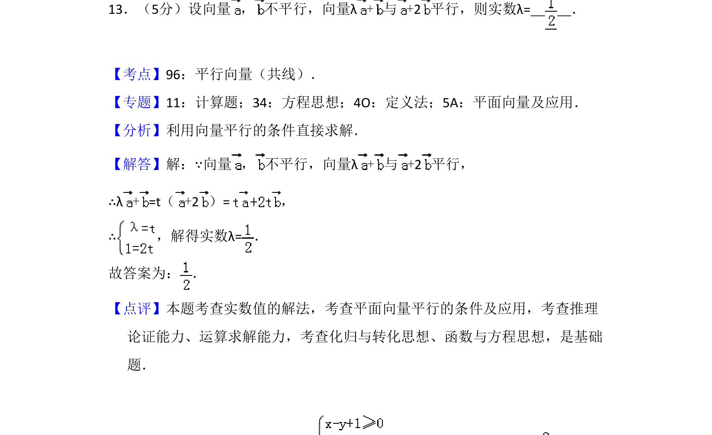
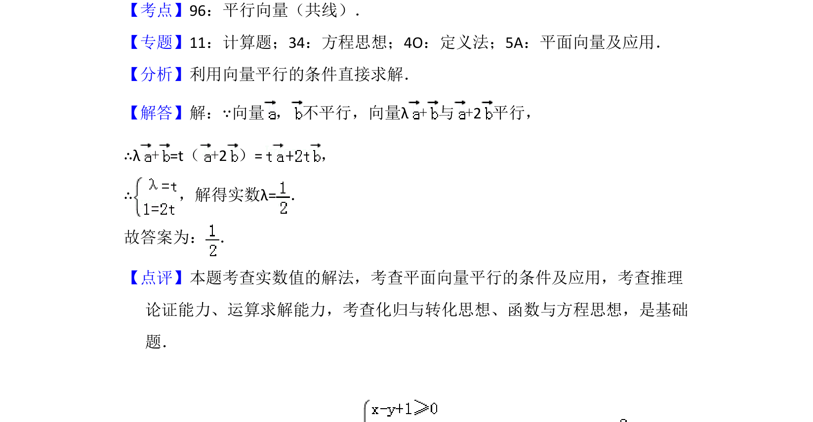

考点：向量共线 平面向量 方程思想

本题利用向量平行的条件，通过共线定理建立方程求解参数λ。

📄 原 PDF 第 11 页：
素材/真题/吉林/2008-2024·（吉林）数学高考真题/2015年高考数学试卷（理）（新课标Ⅱ）（解析卷）.pdf
13．（5分）设向量 ， 不平行，向量λ+与+2平行，则实数λ= ．
【考点】96：平行向量（共线）．菁优网版权所有 【专题】11：计算题；34：方程思想；4O：定义法；5A：平面向量及应用． 【分析】利用向量平行的条件直接求解． 【解答】解：∵向量 ， 不平行，向量λ+与+2平行， ∴λ+=t（+2）=， ∴，解得实数λ=． 故答案为： ． 【点评】本题考查实数值的解法，考查平面向量平行的条件及应用，考查推理 论证能力、运算求解能力，考查化归与转化思想、函数与方程思想，是基础 题．